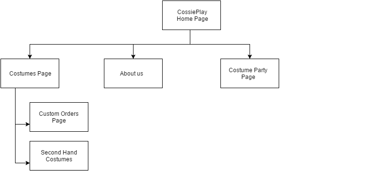

Name:Hayden Bovey
Login:jc351020
The goals for CossiePlay are to increase there weekly production of costumes which is currently at four a week by having the website added while they also wish to get a younger target audience to purchase and participate in cosplay. CossiePlay also wish to increase the amount of people attending there monthly costume party which currently averages 30 people a party.
The way we will be monitoring the success of the website is by monitoring the amount of new orders and order inquiries, plus the amount of participants in the costume party. If the website is getting more orders and more party guests each month then the website would be classed as successful.
The current target audience is mid-adults (35-50), and the client also wishes to have younger audiences interested in the store (early teens to early adults). The way the website will draw in younger people is by having...
